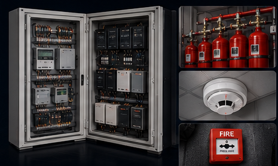

FDSS / FSDS by Beatle Analytics is designed to unify inspection, inventory, warranty and fire-safety monitoring workflows on one secure platform.

The platform is designed around the actual equipment ecosystem used in fire detection and suppression workflows, allowing teams to monitor the lifecycle of each component rather than working with disconnected records.


Master data, inspections, warranty records, component status and alerts stay connected—making it easier for officers, auditors and operational teams to act on accurate information.
Explore the Workflow →Request a walkthrough for your railway unit.